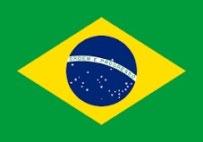
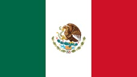
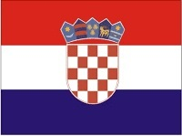
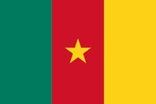

Copa do Mundo FIFA de 2014 foi a vigésima edição deste evento esportivo, um torneio internacional de futebol masculido organizado pela Federação Internacional de Futebol (FIFA), que ocorreu no Brasil, anfitrião da competição pela segunda vez.
Algumas das seleções participantes foram:
| Confederação | Seleção |
|---|---|
| CONCACAF | Estados Unidos |
| México | |
| Honduras | |
| Costa Rica | |
| AFC | Japão |
| Coreia do Sul | |
| Irã | |
| Austrália |
O grupo A do torneio teve a seguinte classificação final:
| Pos. | Seleção | Pts | SG | |
|---|---|---|---|---|
| 1. |  | Brasil | 7 | +5 |
| 2. |  | México | 7 | +3 |
| 3. |  | Croácia | 3 | 0 |
| 4. |  | Camarões | 0 | -8 |
Fonte:Wikipedia, a enciclopédia livre.